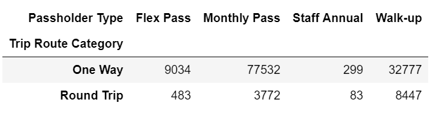
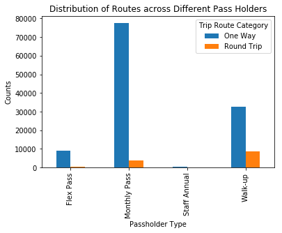

The below table denotes the cross-references between trip route types and passholder types. It is widely apparent from graph, that monthly passholders have by far, the greatest number of one-way trips, while walk-up passholders have the greatest number of round-trips. In order to better balance this graph, one change that could be made could be applying employee discounts for staff-annual passholders. For example, if the per half-hour fee was reduced for staff, this would encourage more of them to use the service that the spend their lives creating. Additionally, in order to better balance the number of round trips for Flex Pass holders, otherwise known as the Annual Pass Holders, BikeShare could provide coupons or credit for those who ride a full trip.
 